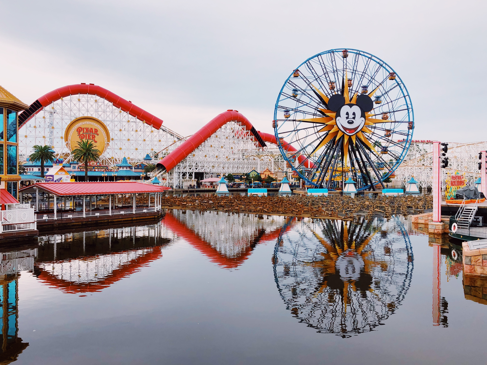

佛羅里達州是美國東南部的一個州，以其美麗的海灘、溫暖的氣候和豐富的歷史文化而聞名。在佛羅里達州，有許多值得一遊的景點，其中最受歡迎的景點之一是迪士尼世界度假區。
迪士尼世界度假區是全球最大的主題公園之一，位於佛羅里達州奧蘭多市，佔地面積達25,000英畝。它由四個主題公園、兩個水上樂園和許多餐廳、購物中心和娛樂場所組成，每年吸引著數百萬遊客前來遊玩。
其中最受歡迎的主題公園之一是魔法王國，它是迪士尼世界度假區的旗艦主題公園，也是全球最受歡迎的主題公園之一。在這裡，你可以體驗到許多經典的迪士尼動畫故事，例如白雪公主、小美人魚、小熊維尼和小矮人等等。你可以乘坐各種遊樂設施，例如「太空山」、「小熊維尼歷險記」和「海盜船」，也可以欣賞到令人驚嘆的煙火表演和精彩的音樂劇。
另一個受歡迎的主題公園是迪士尼好萊塢影城，它是一個以好萊塢電影為主題的主題公園。在這裡，你可以體驗到許多經典的好萊塢電影，例如《星際大戰》、《侏羅紀公園》和《哈利波特》等等。你可以乘坐各種遊樂設施，例如「飛越加勒比海盜」、「哈利波特禁忌之旅」和「模擬飛行」，也可以欣賞到令人驚嘆的特技表演和音樂劇。
此外，迪士尼世界度假區還有兩個水上樂園，分別是泰芙尼灣和暴風灣。在這裡，你可以享受到許多刺激的滑水道和水上遊樂設施，例如「地獄之淵」、「海嘯湧起」和「綠色光芒」等等。
總之，迪士尼世界度假區是一個值得一遊的景點，它不僅是一個適合全家人遊玩的地方，也是一個讓你可以體驗到許多經典的迪士尼動畫故事和好萊塢電影的地方。如果你計劃前往佛羅里達州旅遊，不妨來迪士尼世界度假區看看，相信你一定會度過一個難忘的假期。